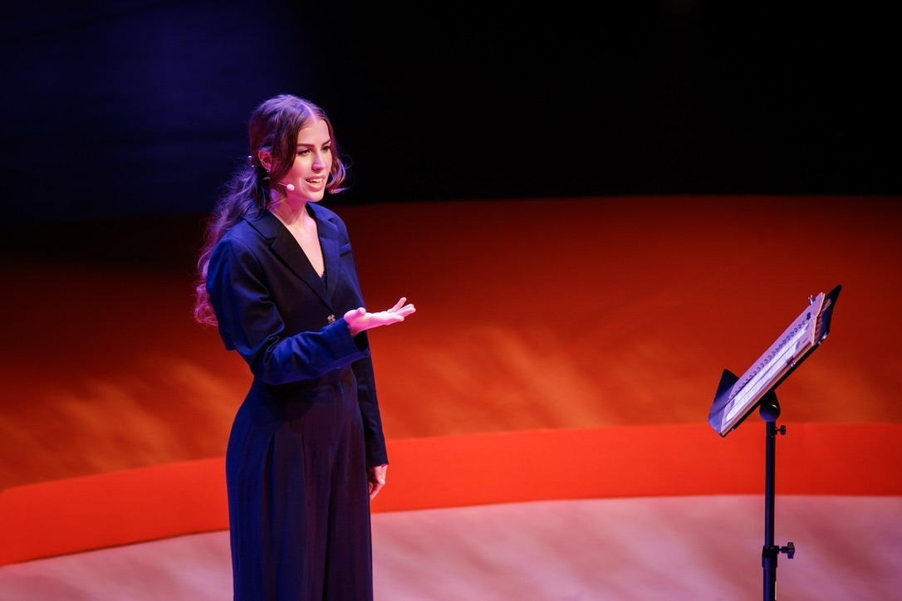

pressure changing? 
Antonia Eriksson
Antonia is a spoken word poet and public speaker living in Stockholm. Her spoken word career started in 2018 at the Swedish poetry slam championships, which was the first time she ever read poetry in front of an audience. Since that day spoken word poetry is a her biggest passion. She is a multiple finalist in the Swedish poetry slam championships and is well know in the poetry community in Sweden for her passionate performances.
Antonias poetry is raw and vulnerable, inviting listeners in to her heart and soul and bringing them along as a companion on her journey towards self-development and healing. Being half British she writes most of her poetry in English, allowing a wide range os listeners to take part. She uses poetry as her medium to connect with people through vulnerable storytelling, aspiring to plant seeds of hope in her listeners hearts. She is an activist at heart and brings that with her into a lot of her poetry, but also wears her heart on her sleeve every time she steps on a stage hoping to inspire others to do the same.